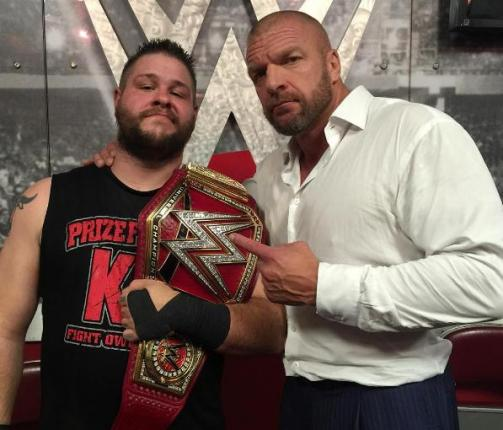

Last night on RAW, Triple H turned on Seth Rollins to help Prize Fighter Kevin Owens win the new championship.
The big surprise of the night was when Triple H, who has not been seen since April at Wrestlemania, showed up unannounced and pedigreed both Roman Reigns and Seth Rollins. The match was a NO DQ so there was nothing anyone could do about it! He handed Kevin Owens the championship!!!
For a detailed explanation visit Raw Results.